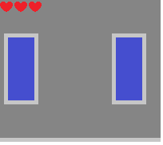

Description: The health mechanic refers to how many times the player can take damage before they die. The player can take damage through falling into traps or being hit by an enemy. Within the context of the game, the player has 5 units of health. Using items found within the game can replenish the character’s health by 2 units.
Other enemies do not share this health mechanic. In other words, enemies cannot be killed, and they must be avoided.
This is the design of the health mechanic:
The following is an annotated diagram of how the player interacting with a trap can affect their HP:
Carl is a 12 year old casual gamer that enjoys easy video games. As the health mechanic provides multiple chances for the player to learn from their mistakes and progress, Carl is pleased that he feels he can make progressive and continuous accomplishment in a video game without dying. However, Carl does sometimes get frustrated when he dies to a sneaky trap or is killed by an enemy. This means that although Carl can occasionally become frustrated due to the difficulty of the game, it is still easy enough that he can have an enjoyable experience playing it.
Dylan is an 18 year old intermediate gamer. The health mechanic gives plenty of chances for Dylan to progress through the early levels at a satisfying pace and he rarely becomes frustrated once he dies. Occasionally Dylan can get stuck at certain points in the game, but generally he powers through it without too much difficulty. However, in the later levels, as the game becomes harder, Dylan encounters more difficulty and has to overcome the new challenges he faces.
Tyler is a 22 year old hardcore gamer. He desires a gruelling, relentless challenge. Although Tyler finds the game exceptionally easy in the first 10 levels or so, eventually he starts to find it more difficult as more dynamics become introduced into the game and the enemies, as well as traps, become more ferocious and numerous.
The health mechanic as a concept can be evaluated through multiple elements of a criteria. These include whether the health mechanic is represented by an instinctive symbol apparent to the user, whether the display of the health is visually appealing and positioned correctly, and if the mechanic itself has a meaningful purpose in the game.
Firstly, does the health mechanic have an intuitive symbol that symbolises the health? In this case, a “heart” representing the player’s health is a popular standard used in video games in which the player can take damage.
Secondly, is the positioning and sizing of where the health is visually appealing? Due to the scale of platforming games, the sizing of the hearts would need to be adjusted relevant to the resolution. In this case, from a cursory glance, the health is not visually overbearing but it is also not so small that it is not immediately obvious how much health the player has left.
Thirdly, does the health mechanic serve a meaningful function in the context of the game? The health mechanic provides chances for the player to keep progressing through a level and keeps the difficulty balanced. This means the game is more accessible to wider audiences and is not strictly a difficult game that only attracts experienced players or those who desire challenges.